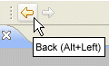
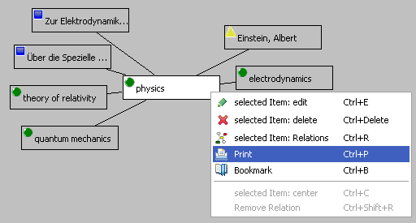
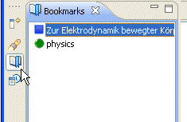
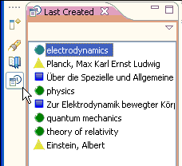
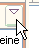
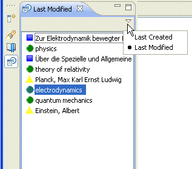
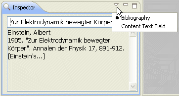
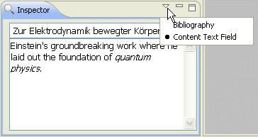

Navigation history
|  | The Relations browser keeps a navigation history.
You can press the  arrow on the workbench toolbar (or arrow on the workbench toolbar (or Alt+Left Arrow)
to go back to the last visited item.
Pressing the  (or (or Alt+Right Arrow) will get you back to the
item you started.
|
Bookmarking items
Using the context menu (or Ctrl+B) you can bookmark any item.

Bookmark an item in the Relations view.
You can access the bookmarks in the bookmark view and use them as any item in a selection view, i.e. you can display the bookmarked item in the Relations browser by double clicking it or you can drag'n drop it on an item in the Relations browser to make the selected items related with the drop target.

The view of bookmarks.
This feature might be useful if you want to mark an item as your work item. You then can search and surf your Relations context to find items you want to relate with your work item. Having found an item you consider to relate, you can display it in the Relations browser and drop your work item from the bookmark view on it.
Last changes
Having created a new item, you might be interested to search and surf your Relations context to find items suitable to be related with your newly created item. You can easily do this by displaying the view displaying the last created items and drop the new item from this list on the drop target you found.

If you rather like to diplay the list of last modified items, you can switch the view using the view menu. 

Improved Inspector view for Text items
The Text item's main purpose is to store bibliographical information. To be useful, this information has to be well structured. The Inspector view, however, has only limited options to display structured information. To overcome this limitation, you can switch the Text item's inspector view now from bibliographical display to an editable view of the item's text field. Thus, you can edit the Text item's text field now in the same way you could for the Term and Person item.

Inspector view in bibliography formatting mode.

Inspector view in text edit mode.